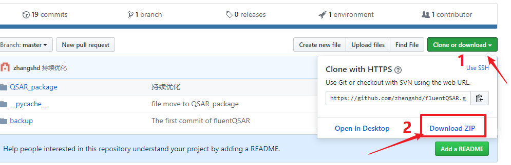
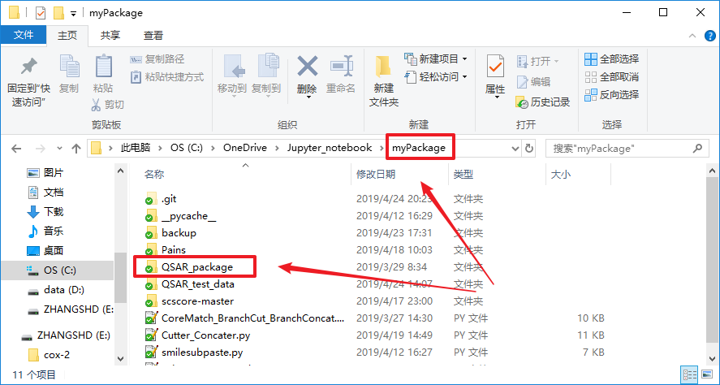
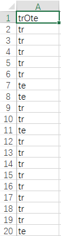

- QSAR_package使用说明
QSAR_package使用说明
看完如下使用说明后可仿照例子脚本（点此查看例子脚本[仅供参考]）编写符合自身需求的调用脚本并投入实际使用，祝您使用愉快！
运行环境配置需求：
- python3
- scikit-learn
- numpy
- pandas
- matplotlib
推荐安装和使用Anaconda3。
1. 使用前准备
下载所有脚本（点此直接下载ZIP），把所有文件解压后存放至一个目录，如$/myPackage/
 
新建一个文本文件，把上述目录的路径粘贴至这个文件内，然后把后缀改为.pth，如myPackage.pth

打开cmd，输入python进入Python交互界面
import sys
sys.path
找到一个类似..\\lib\\site-packages的路径

然后进入这个文件夹，把刚才创建的myPackage.pth文件放入这个路径，

以上操作的目的是把自己的脚本库路径加入到Python的环境变量中
2. 提取数据/随机划分训练集测试集——必选步骤，三种方式三选一
在存放描述符数据的文件中，一定要把标签列放于第一个特征（描述符）列的前一列
2.1 输入一个总描述符文件，采用随机划分的方式产生训练集和测试集
from QSAR_package.data_split import randomSpliter
file_name = "./spla2_296_rdkit2d.csv" # 描述符数据文件路径
spliter = randomSpliter(test_size=0.25,random_state=0)
spliter.ExtractTotalData(file_name,label_name='Activity') #注意指定标签（活性）列的列名
spliter.SplitData()
tr_x = spliter.tr_x
tr_y = spliter.tr_y
te_x = spliter.te_x
te_y = spliter.te_y
如果想保存训练集测试集标签，则加入以下代码：
spliter.saveTrainTestLabel('./sPLA2_296_trOte0.csv') # 参数为存放路径
保存出来的文件预览如下，表格只包含一列，第一行为表头名，后面为每个样本对应的训练集标签”tr”或测试集标签”te”，样本的顺序与原始输入文件的样本顺序一致。

2.2 根据训练集和测试集标签文件提取训练集和测试集
from QSAR_package.data_split import extractData
data_path = './spla2_296_rdkit2d.csv' # 描述符数据文件路径
trOte_path = './sPLA2_296_trOte0.csv' # 训练集和测试集标签文件路径
spliter = extractData()
spliter.ExtractTrainTestFromLabel(data_path, trOte_path, label_name='Activity') #注意指定标签（活性）列的列名
tr_x = spliter.tr_x
tr_y = spliter.tr_y
te_x = spliter.te_x
te_y = spliter.te_y
2.3 训练集测试集放于两个文件中
如果已经提前分好训练集测试集，且训练集和测试集文件存放于两个文件中，则使用以下代码
from QSAR_package.data_split import extractData
train_path = './train_312_maccs.csv' # 训练集数据文件路径
test_path = './test_140_maccs.csv' # 测试集数据文件路径
spliter = extractData()
spliter.ExtractTrainTestData(train_path, test_path, label_name='Activity') #注意指定标签（活性）列的列名
tr_x = spliter.tr_x
tr_y = spliter.tr_y
te_x = spliter.te_x
te_y = spliter.te_y
3. 通过txt文件提取部分特征——可选步骤
在前面已经提取了训练集和测试集数据的情况下（通过文件提取或随机划分得到），可以通过一个包含若干描述符名的txt文件提取的部分特征数据，不在txt文件中的描述符会被排除。用法如下：
feature_txt_path = './descriptors.txt' # 存放所需描述符名的文件路径
spliter.ExtractFeatureFromTXT(feature_txt_path)
tr_x = spliter.tr_x # 运行ExtractFeatureFromTXT后重新赋值tr_x
te_x = spliter.te_x # 运行ExtractFeatureFromTXT后重新赋值te_x
4. Pearson相关性筛选/RFE排序/数据压缩
4.1 Pearson相关性筛选（按训练集数据筛选）——可选步骤（一般都会用上）
from QSAR_package.feature_preprocess import correlationSelection
corr = correlationSelection()
corr.PearsonXX(tr_x, tr_y,threshold_low=0.1, threshold_up=0.9)
筛选结果的描述符顺序已经按照其跟活性的Pearson相关性从高到低排好序，筛选之后的数据可通过corr.selected_tr_x获取，该属性是筛选之后的DataFrame对象，然后将此结果输入数据压缩环节。
4.2 数据压缩——必要步骤
数据压缩模块dataScale可以将所有描述符数据压缩至指定的区间范围（如0.1到0.9），此处直接使用上一步骤Pearson相关性筛选产生的训练集数据corr.selected_tr_x拟合压缩器，然后对测试集数据进行压缩，此模块能自动识别连续型的描述符数据和指纹描述符数据，如果输入的是指纹描述符数据，则压缩之后数据不会有变化，所以，为了减少代码的改动，保证变量的统一，可以让指纹描述符也经过数据压缩过程，其数值不会发生变化。
from QSAR_package.data_scale import dataScale
scaler = dataScale(scale_range=(0.1, 0.9))
tr_scaled_x = scaler.FitTransform(corr.selected_tr_x)
te_scaled_x = scaler.Transform(te_x,DataSet='test') # 此压缩过程会自动从te_x中提取tr_scaled_x中所出现的所有列名对应的数据
在上述代码中，DataSet参数如果为’train’则将压缩后的数据存入属性scaler.tr_scaled_x，如果为’test’，则将压缩后的数据存入属性scaler.te_scaled_x。scaler.FitTransform等价于先用scaler.Fit再用scaler.Transform，如下：
scaler = dataScale(scale_range=(0.1, 0.9))
scaler.Fit(corr.selected_tr_x)
tr_scaled_x = scaler.Transform(corr.selected_tr_x,DataSet='train')
te_scaled_x = scaler.Transform(te_x,DataSet='test')
4.3 RFE（递归消除法）排序——可选步骤
经过压缩之后，数据就可以直接输入参数寻优环节了，如果还需要将描述符的顺序换为RFE（递归消除法）排序的顺序，则运行以下代码：
from QSAR_package.feature_preprocess import RFE_ranking
rfe = RFE_ranking(estimator='SVC') # "SVC" 为用于实现RFE排序的学习器（分类或回归算法）
rfe.Fit(tr_scaled_x, tr_y)
tr_ranked_x = rfe.tr_ranked_x
te_ranked_x = te_scaled_x.loc[:,tr_ranked_x.columns]
目前支持字符串指定的学习器有”SVC”(分类)、”RFC”（分类）、”SVR”（回归）、”RFR”（回归），如果想尝试其他学习器，可以直接让estimator参数等于一个自定义的学习器对象，前提是该学习器对象有coef_或feature_importance_属性，详见sklearn文档中RFE算法的介绍
5. 参数寻优
5.1 不带描述符数量的重复网格寻优
-
使用
gridSearchBase模块可以自定义传入学习器、参数字典、打分器对象，进行重复网格寻优，此处以SVC算法的寻优为例from QSAR_package.grid_search import gridSearchBase from sklearn.svm import SVC from sklearn.metrics import accuracy_score,make_scorergrid_estimator = SVC() # 学习器对象 grid_dict = {'C':[1,0.1,0.01],'gamma':[1,0.1,0.01]} # 对应学习器的参数字典 grid_scorer = make_scorer(accuracy_score,greater_is_better=True) # 打分器对象 grid = gridSearchBase(fold=5, grid_estimator=grid_estimator, grid_dict=grid_dict, grid_scorer=grid_scorer, repeat=10) grid.Fit(tr_scaled_x,tr_y)其中
fold为网格寻优中交叉验证的重数，repeat为网格寻优的重复次数； 然后可以通过grid.best_params获取最优参数，通过grid.best_estimator获取拟合好的学习器。 - 使用
gridSearchPlus模块可以通过字符串直接指定预定义好的学习器和对应的参数字典及打分器，现支持的算法有”SVC”、”DTC”、”RFC”、”SVR”、”RFR”，调用代码（不带描述符数量的寻优）如下：from QSAR_package.grid_search import gridSearchPlusgrid = gridSearchPlus(grid_estimatorName='SVC', fold=5, repeat=5) grid.Fit(tr_scaled_x,tr_y)然后可以通过
grid.best_params获取最优参数，通过grid.best_estimator获取拟合好的学习器。5.2 带描述符数量的重复网格寻优
因为前面已经介绍了可以通过Pearson相关性或者RFE方法对描述符数据排序，得到一个在列方向上有序的二维数据（DataFrame或numpy数组），如此以来，便可以将描述符的数量
n也作为一个超参数，参与寻优过程，在网格寻优的外层套一个循环，每次循环取前n个描述符的数据，再用此数据进行重复网格寻优，最后找出在交叉验证的得分最高的描述符数量与参数组合。 - 使用
gridSearchBase模块进行带描述符数量的重复网格寻优from QSAR_package.grid_search import gridSearchBasegrid_estimator = SVC() # 学习器对象 grid_dict = {'C':[1,0.1,0.01],'gamma':[1,0.1,0.01]} # 对应学习器的参数字典 grid_scorer = make_scorer(accuracy_score,greater_is_better=True) # 打分器对象 grid = gridSearchBase(fold=5, grid_estimator=grid_estimator, grid_dict=grid_dict, grid_scorer=grid_scorer, repeat=10) grid.FitWithFeaturesNum(tr_scaled_x, tr_y,features_range=(5,20)) # features_range为描述符数量的迭代范围，参数为包含两个整数的元组或列表形式，其中第一个整数为描述符数量的下限，第二个整数为描述符数量的上限然后可以通过
grid.best_params获取最优参数，通过grid.best_estimator获取拟合好的学习器，还可以通过grid.best_features获取最终选择的描述符名称。 - 使用
gridSearchPlus模块进行带描述符数量的重复网格寻优from QSAR_package.grid_search import gridSearchPlusgrid = gridSearchPlus(grid_estimatorName='SVC', fold=5, repeat=5) grid.FitWithFeaturesNum(tr_scaled_x, tr_y,features_range=(5,20))然后可以通过
grid.best_params获取最优参数，通过grid.best_estimator获取拟合好的学习器，还可以通过grid.best_features获取最终选择的若干个描述符名称。5.3 Early_stop策略——降低过拟合程度
正常情况gridsearch所选的最优参数组合是交叉验证平均得分（mean_test_score）最高的参数组合，如果采用Early_stop策略，则会从（mean_test_score）最高分开始向下寻找（分值按降序排列）得分与最高分有显著差异的次优参数组合， 显著差异的标准就是该分值与最高分的差值占该分值的比率（取绝对值）大于指定的early_stop数值，最终选择的参数组合是降序排名在上述次优参数组合前一名的参数组合，在
gridSearchBase和gridSearchPlus中都可以设置early_stop参数，默认为None，有效的early_stop参数值为0到1之间的浮点数，具体例子如下：grid_estimator = SVC() # 学习器对象 grid_dict = {'C':[1,0.1,0.01],'gamma':[1,0.1,0.01]} # 对应学习器的参数字典 grid_scorer = make_scorer(accuracy_score,greater_is_better=True) # 打分器对象 grid = gridSearchBase(fold=5, grid_estimator=grid_estimator, grid_dict=grid_dict, grid_scorer=grid_scorer, repeat=10, early_stop=0.01) ...或者
grid = gridSearchPlus(grid_estimatorName='SVC', fold=5, repeat=5, early_stop=0.01) ...
6. 拟合模型/评价模型/保存结果
- 用
modeling模块可以传入一个学习器对象及对应的一组超参数，然后使用训练集进行拟合（modeling.Fit），同时也可以用来对测试集样本进行预测（modeling.Predict），还可以用训练集做交叉验证（通过sklearn中metrics模块下的cross_val_predict实现，通过modeling.CrossVal调用）。分类任务的预测结果评价值包括Accuracy、MCC、SE、SP、tp、tn、fp、fn，回归任务的预测结果评价值包括R2、RMSE、MAE。评价结果可以通过modeling.ShowResults打印出来，如果想看训练集和测试集预测结果的散点图（回归任务），可以设定参数make_fig=True，该参数默认为False。评价结果及模型的超参数可以通过modeling.SaveResults方法保存，保存的机制是以追加的方式写入一个csv文件，如果在使用modeling.ShowResults设置了make_fig=True，则散点图也会保存出来（tif格式），同时，这组结果对应的模型文件也会保存（.model后缀），如果不需要，则可以在modeling.SaveResults中设置save_model=False。-
modeling模块可以直接接收上一环节网格寻优的结果（grid.best_estimator、grid.best_params、grid.best_features），使用示例如下：from QSAR_package.model_evaluation import modelingmodel = modeling(estimator=grid.best_estimator,params=grid.best_params) model.Fit(tr_scaled_x.loc[:,grid.best_features], tr_y) model.Predict(te_scaled_x.loc[:,grid.best_features],te_y) model.CrossVal(cv="LOO") # cv可以为'LOO'或正整数，也可以为一个交叉验证生成器对象如`Kfold`、`LeaveOneOut`等 model.ShowResults(show_cv=True, make_fig=False) model.SaveResults('./results.csv',notes='自己定义的一些备注信息') -
modeling模块也可以传入外部定义好的学习器对象和对应的超参数字典，以SVC为例：from QSAR_package.model_evaluation import modeling from sklearn.svm import SVCestimator = SVC() params = {"C":1, "gamma":0.1} model = modeling(estimator=estimator,params=params) model.Fit(tr_scaled_x, tr_y) model.Predict(te_scaled_x,te_y) model.CrossVal(cv=5) # cv可以为'LOO'或正整数，也可以为一个交叉验证生成器对象如`Kfold`、`LeaveOneOut`等 model.ShowResults(show_cv=True, make_fig=False) model.SaveResults('./results.csv',notes='自己定义的一些备注信息')
-
modelEvaluator是一个独立的模型评价模块，可以直接传入真实值y_true和预测值y_pred，得到分类或回归的评价值，它能根据传入的y_true自动识别其是属于分类数据还是回归数据。分类任务的预测结果评价值包括Accuracy、MCC、SE、SP、tp、tn、fp、fn，回归任务的预测结果评价值包括R2、RMSE、MAE，这些可以通过modelEvaluator实例的属性查看。modeling模块的模型评价方法就是继承自modelEvaluator模块。用法如下（以回归任务的预测结果评价为例）：from QSAR_package.model_evaluation import modelEvaluatorevaluator = modelEvaluator(y_true,y_pred) r2 = evaluator.r2 rmse = evaluator.rmse mae = evaluator.mae也可以直接查看该实例对象的属性字典来查看所有评价值：
evaluator = modelEvaluator(y_true,y_pred) all_metrics = dict(evaluator.__dict__.items()) print(all_metrics){‘r2’: 0.7373, ‘rmse’: 0.6008, ‘mae’: 0.5395}
7. 重新载入模型进行预测
在使用modeling模块的时候，如果保存了模型文件，则可以在后期重新导入模型，并使用该模型对某数据集进行预测，需要注意的是，用来进行预测的特征数据必须与所导入模型的原始训练数据在列方向上保持一致，且经过与原始训练数据相同的压缩过程，示例如下：
from sklearn.externals import joblib
from QSAR_package.data_scale import dataScale
scaler = dataScale(scale_range=(0.1, 0.9))
tr_scaled_x = scaler.FitTransform(tr_x) # tr_x中的描述符需与建模时所用的描述符数据完全一致，才能重现结果
te_scaled_x = scaler.Transform(te_x,DataSet='test') # te_x中只要包含所有tr_x中出现的描述符数据即可，压缩过程会自动从中提取所需要的列
model = joblib.load("./SVR.model")
tr_pred_y = model.predict(tr_scaled_x)
te_pred_y = model.predict(te_scaled_x)
如果还想对预测结果进行评价，可以使用modelEvaluator模块，只需传入真实值与预测值即可：
tr_eva = modelEvaluator(tr_y, tr_pred_y)
te_eva = modelEvaluator(te_y, te_pred_y)
print(tr_eva.r2,tr_eva.rmse,tr_eva.mae)
print(te_eva.r2,te_eva.rmse,te_eva.mae)
0.9263 0.3442 0.4126
0.5377 0.8584 0.6257